Alevin
Last updated: 2019-02-22
workflowr checks: (Click a bullet for more information)-
✔ R Markdown file: up-to-date
Great! Since the R Markdown file has been committed to the Git repository, you know the exact version of the code that produced these results.
-
✔ Environment: empty
Great job! The global environment was empty. Objects defined in the global environment can affect the analysis in your R Markdown file in unknown ways. For reproduciblity it’s best to always run the code in an empty environment.
-
✔ Seed:
set.seed(20190110)The command
set.seed(20190110)was run prior to running the code in the R Markdown file. Setting a seed ensures that any results that rely on randomness, e.g. subsampling or permutations, are reproducible. -
✔ Session information: recorded
Great job! Recording the operating system, R version, and package versions is critical for reproducibility.
-
Great! You are using Git for version control. Tracking code development and connecting the code version to the results is critical for reproducibility. The version displayed above was the version of the Git repository at the time these results were generated.✔ Repository version: 15192ee
Note that you need to be careful to ensure that all relevant files for the analysis have been committed to Git prior to generating the results (you can usewflow_publishorwflow_git_commit). workflowr only checks the R Markdown file, but you know if there are other scripts or data files that it depends on. Below is the status of the Git repository when the results were generated:
Note that any generated files, e.g. HTML, png, CSS, etc., are not included in this status report because it is ok for generated content to have uncommitted changes.Ignored files: Ignored: .DS_Store Ignored: .Rhistory Ignored: .Rproj.user/ Ignored: ._.DS_Store Ignored: analysis/cache/ Ignored: build-logs/ Ignored: data/ Ignored: output/03-clustering/selected_genes.csv.zip Ignored: output/04-marker-genes/de_genes.csv.zip Ignored: output/06-velocyto/ Ignored: packrat/.DS_Store Ignored: packrat/._.DS_Store Ignored: packrat/lib-R/ Ignored: packrat/lib-ext/ Ignored: packrat/lib/ Ignored: packrat/src/ Untracked files: Untracked: output/01B-alevin/alevin-comparison.pdf Untracked: workflowr-build.e2538443 Untracked: workflowr-build.e2545370 Untracked: workflowr-build.o2538443 Untracked: workflowr-build.o2545370 Unstaged changes: Modified: output/02-quality-control/parameters.json Modified: output/03-clustering/cluster_assignments.tsv.gz Modified: output/03-clustering/cluster_expression.tsv.gz Modified: output/03-clustering/parameters.json Modified: output/04-marker-genes/de_genes.xlsx Modified: output/05-paga/cell_edges.csv Modified: output/05-paga/cell_embedding.csv Modified: output/05-paga/cluster_edges.csv Modified: output/05-paga/cluster_embedding.csv Modified: output/05-paga/cluster_tree_edges.csv Modified: scripts/build.pbs
Expand here to see past versions:
# scRNA-seq
library("SingleCellExperiment")
# Plotting
library("UpSetR")
library("cowplot")
library("grid")
# Tidyverse
library("tidyverse")source(here::here("R/load.R"))
source(here::here("R/annotate.R"))
source(here::here("R/output.R"))sel_path <- here::here("data/processed/01-selected.Rds")
alevin_paths <- c(
here::here("data/alevin/Org1"),
here::here("data/alevin/Org2"),
here::here("data/alevin/Org3")
)bpparam <- BiocParallel::MulticoreParam(workers = 10)Introduction
The standard way to quanitfy 10x Chromium scRNA-seq data is using the Cell Ranger platform that performs traditional alignment to a reference genome and counts the reads overlapping annotated genes. An alternative appraoch is to estimate expression levels directly against the transcriptome. We have done that using an approach designed for scRNA-seq data called Alevin available in the Salmon package. In this document we are going to compare the results of this approach to what we get from Cell Ranger and our previous processing.
if (file.exists(sel_path)) {
selected <- read_rds(sel_path)
} else {
stop("Selected dataset is missing. ",
"Please run '01-preprocessing.Rmd' first.",
call. = FALSE)
}
colData(selected)$BarcodeSample <- paste(
colData(selected)$Barcode,
colData(selected)$Sample,
sep = "-"
)alevin <- readAlevin(alevin_paths, dataset = "Orgs123Alevin")
alevin <- annotateSCE(alevin, calc_qc = TRUE, BPPARAM = bpparam)
colData(alevin)$BarcodeSample <- paste(
colData(alevin)$Barcode,
colData(alevin)$Sample,
sep = "-"
)cell_data <- full_join(as.data.frame(colData(selected)),
as.data.frame(colData(alevin)),
by = "BarcodeSample",
suffix = c(".Trad", ".Alevin")) %>%
mutate(Sample = Sample.Trad) %>%
mutate(Sample = if_else(is.na(Sample), Sample.Alevin, Sample)) %>%
select(BarcodeSample, Sample, contains("_"), contains("Filt"),
-contains("control"), -contains("endogenous"), -contains("_MT")) %>%
mutate_at(vars(contains("Filt")), replace_na, replace = FALSE) %>%
mutate(AlevinFilt = !is.na(total_counts.Alevin)) %>%
mutate(SelBy = "Both") %>%
mutate(SelBy = if_else(!is.na(total_counts.Trad) &
is.na(total_counts.Alevin),
"Trad only", SelBy),
SelBy = if_else(is.na(total_counts.Trad) &
!is.na(total_counts.Alevin),
"Alevin only", SelBy)) %>%
mutate(SelBy = factor(SelBy,
levels = c("Both", "Trad only", "Alevin only")))
feat_data <- full_join(as.data.frame(rowData(selected)),
as.data.frame(rowData(alevin)),
by = "ID",
suffix = c(".Trad", ".Alevin")) %>%
mutate(Annot = "Both") %>%
mutate(Annot = if_else(!is.na(total_counts.Trad) &
is.na(total_counts.Alevin),
"Trad only", Annot),
Annot = if_else(is.na(total_counts.Trad) &
!is.na(total_counts.Alevin),
"Alevin only", Annot)) %>%
mutate(Annot = factor(Annot,
levels = c("Both", "Trad only", "Alevin only")))Cell selection
Alevin has it’s own method of selecting cell-containing droplets. Let’s see how that compares to what we have done previously.
ggplot(cell_data, aes(x = SelBy, fill = Sample)) +
geom_bar() +
theme_minimal() +
theme(axis.title.x = element_blank())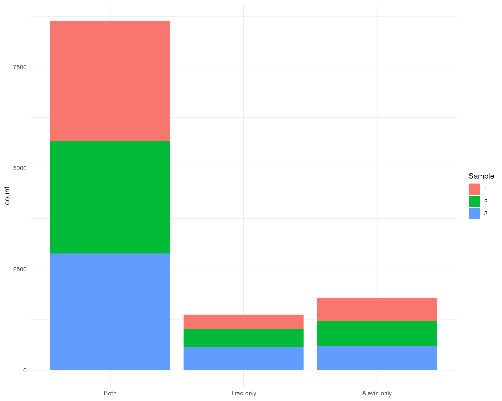
Expand here to see past versions of cell-selection-1.png:
| Version | Author | Date |
|---|---|---|
| 8f826ef | Luke Zappia | 2019-02-08 |
Cell counts
Standard
plot_data <- cell_data %>%
mutate(Traditional = total_counts.Trad,
Alevin = total_counts.Alevin) %>%
mutate(Traditional = replace_na(Traditional,
0.9 * min(Traditional, na.rm = TRUE)),
Alevin = replace_na(Alevin, 0.9 * min(Alevin, na.rm = TRUE)))
ggplot(plot_data, aes(x = Traditional, y = Alevin, colour = SelBy)) +
geom_point(alpha = 0.3) +
geom_abline(intercept = 0, slope = 1, colour = "red") +
geom_smooth(data = filter(plot_data, SelBy == "Both"),
method = "lm", colour = "blue") +
ggtitle("total_counts") +
theme_minimal()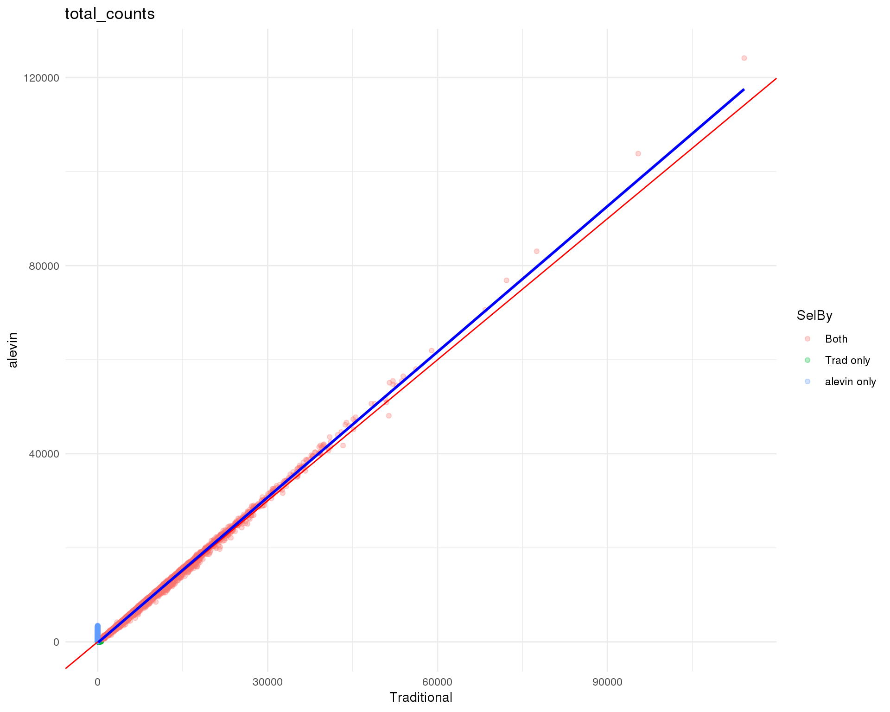
Expand here to see past versions of cell-counts-1.png:
| Version | Author | Date |
|---|---|---|
| 8f826ef | Luke Zappia | 2019-02-08 |
Logged
plot_data <- cell_data %>%
mutate(Traditional = log10_total_counts.Trad,
Alevin = log10_total_counts.Alevin) %>%
mutate(Traditional = replace_na(Traditional,
0.9 * min(Traditional, na.rm = TRUE)),
Alevin = replace_na(Alevin, 0.9 * min(Alevin, na.rm = TRUE)))
ggplot(plot_data, aes(x = Traditional, y = Alevin, colour = SelBy)) +
geom_point(alpha = 0.3) +
geom_abline(intercept = 0, slope = 1, colour = "red") +
geom_smooth(data = filter(plot_data, SelBy == "Both"),
method = "lm", colour = "blue") +
ggtitle("log10(total_counts)") +
theme_minimal()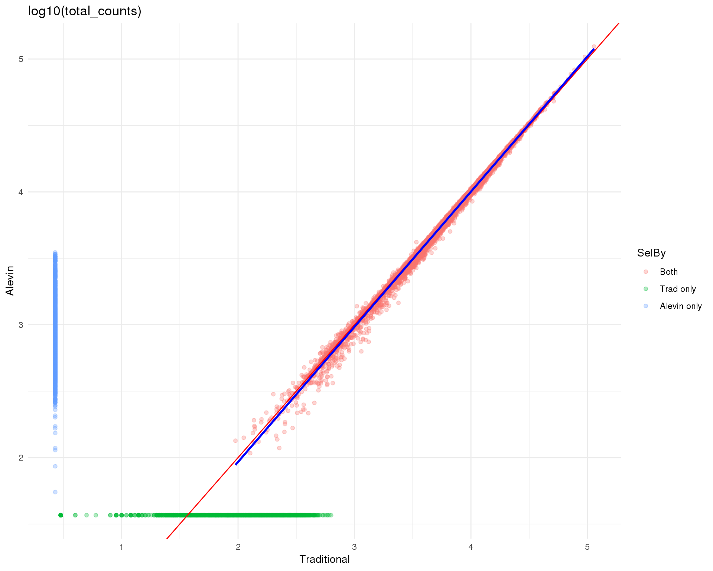
Expand here to see past versions of cell-counts-log-1.png:
| Version | Author | Date |
|---|---|---|
| 8f826ef | Luke Zappia | 2019-02-08 |
Cell features
Standard
plot_data <- cell_data %>%
mutate(Traditional = total_features_by_counts.Trad,
Alevin = total_features_by_counts.Alevin) %>%
mutate(Traditional = replace_na(Traditional,
0.9 * min(Traditional, na.rm = TRUE)),
Alevin = replace_na(Alevin, 0.9 * min(Alevin, na.rm = TRUE)))
ggplot(plot_data, aes(x = Traditional, y = Alevin, colour = SelBy)) +
geom_point(alpha = 0.3) +
geom_abline(intercept = 0, slope = 1, colour = "red") +
geom_smooth(data = filter(plot_data, SelBy == "Both"),
method = "lm", colour = "blue") +
ggtitle("total_features_by_counts") +
theme_minimal()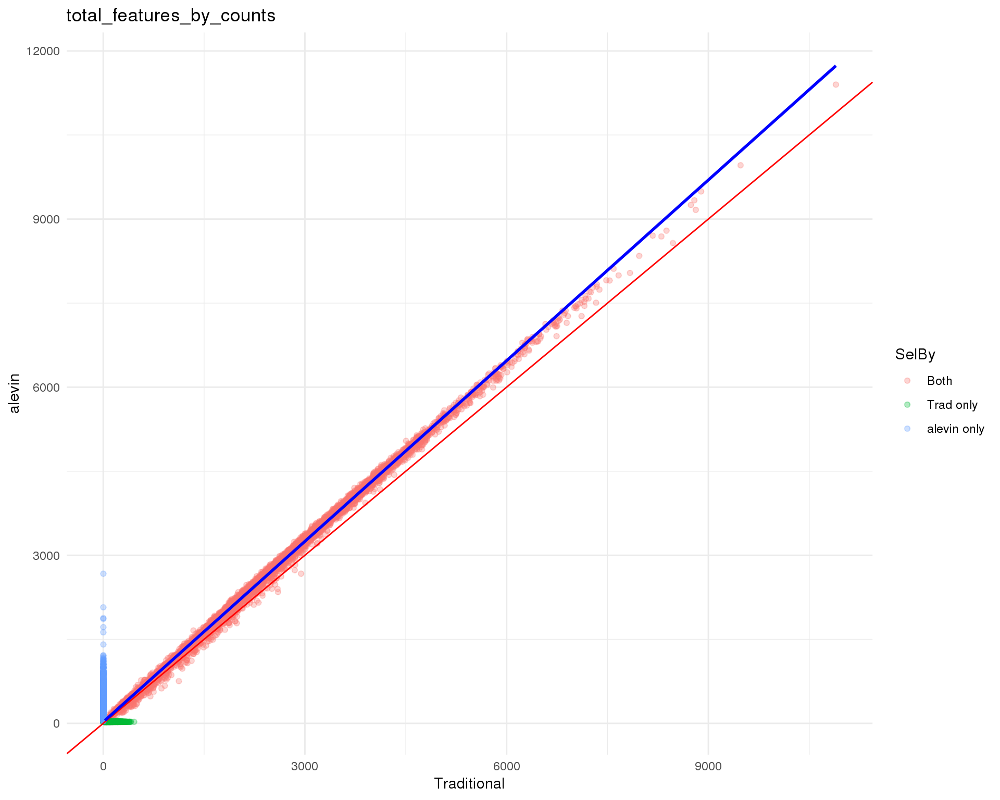
Expand here to see past versions of cell-features-1.png:
| Version | Author | Date |
|---|---|---|
| 8f826ef | Luke Zappia | 2019-02-08 |
Logged
plot_data <- cell_data %>%
mutate(Traditional = log10_total_features_by_counts.Trad,
Alevin = log10_total_features_by_counts.Alevin) %>%
mutate(Traditional = replace_na(Traditional,
0.9 * min(Traditional, na.rm = TRUE)),
Alevin = replace_na(Alevin, 0.9 * min(Alevin, na.rm = TRUE)))
ggplot(plot_data, aes(x = Traditional, y = Alevin, colour = SelBy)) +
geom_point(alpha = 0.3) +
geom_abline(intercept = 0, slope = 1, colour = "red") +
geom_smooth(data = filter(plot_data, SelBy == "Both"),
method = "lm", colour = "blue") +
ggtitle("log10(total_features_by_counts)") +
theme_minimal()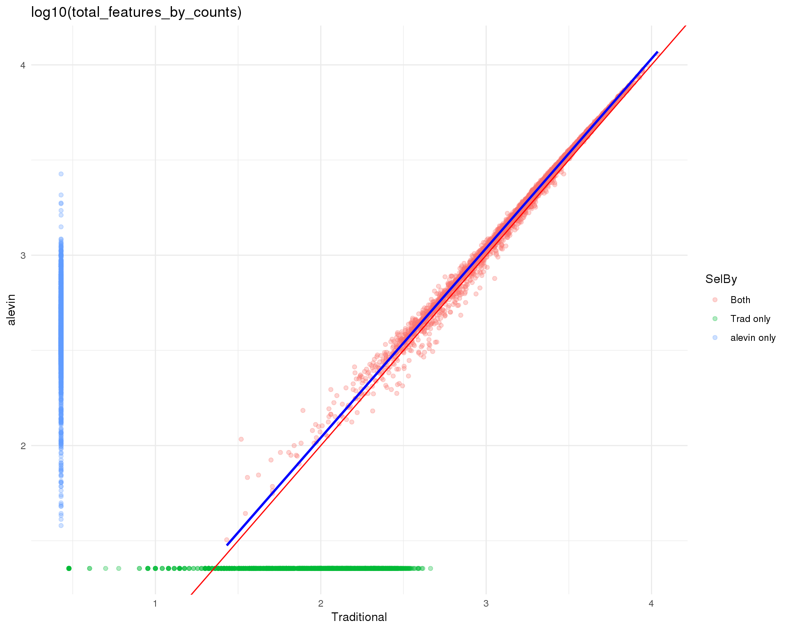
Expand here to see past versions of cell-features-log-1.png:
| Version | Author | Date |
|---|---|---|
| 8f826ef | Luke Zappia | 2019-02-08 |
Top 100
Percent counts in top 100 most expressed features.
plot_data <- cell_data %>%
mutate(Traditional = pct_counts_in_top_100_features.Trad,
Alevin = pct_counts_in_top_100_features.Alevin) %>%
mutate(Traditional = replace_na(Traditional,
0.9 * min(Traditional, na.rm = TRUE)),
Alevin = replace_na(Alevin, 0.9 * min(Alevin, na.rm = TRUE)))
ggplot(plot_data, aes(x = Traditional, y = Alevin, colour = SelBy)) +
geom_point(alpha = 0.3) +
geom_abline(intercept = 0, slope = 1, colour = "red") +
geom_smooth(data = filter(plot_data, SelBy == "Both"),
method = "lm", colour = "blue") +
ggtitle("pct_counts_in_top_100_features") +
theme_minimal()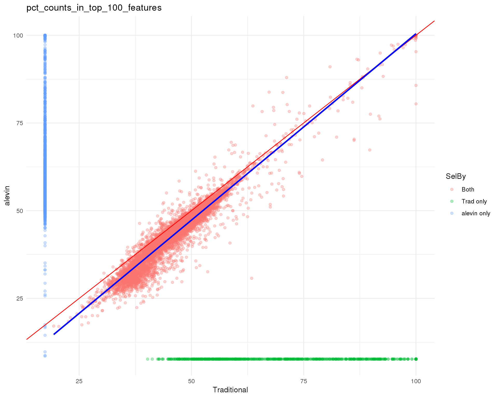
Expand here to see past versions of top-100-1.png:
| Version | Author | Date |
|---|---|---|
| 8f826ef | Luke Zappia | 2019-02-08 |
Gene counts
Standard
plot_data <- feat_data %>%
mutate(Traditional = total_counts.Trad,
Alevin = total_counts.Alevin) %>%
mutate(Traditional = replace_na(Traditional, -1e5),
Alevin = replace_na(Alevin, -1e5))
ggplot(plot_data, aes(x = Traditional, y = Alevin, colour = Annot)) +
geom_point(alpha = 0.3) +
geom_abline(intercept = 0, slope = 1, colour = "red") +
geom_smooth(data = filter(plot_data, Annot == "Both"),
method = "lm", colour = "blue") +
ggtitle("total_counts") +
theme_minimal()
Expand here to see past versions of gene-counts-1.png:
| Version | Author | Date |
|---|---|---|
| 8f826ef | Luke Zappia | 2019-02-08 |
Logged
plot_data <- feat_data %>%
mutate(Traditional = log10_total_counts.Trad,
Alevin = log10_total_counts.Alevin) %>%
mutate(Traditional = replace_na(Traditional, -1),
Alevin = replace_na(Alevin, -1))
ggplot(plot_data, aes(x = Traditional, y = Alevin, colour = Annot)) +
geom_point(alpha = 0.3) +
geom_abline(intercept = 0, slope = 1, colour = "red") +
geom_smooth(data = filter(plot_data, Annot == "Both"),
method = "lm", colour = "blue") +
ggtitle("log10(total_counts)") +
theme_minimal()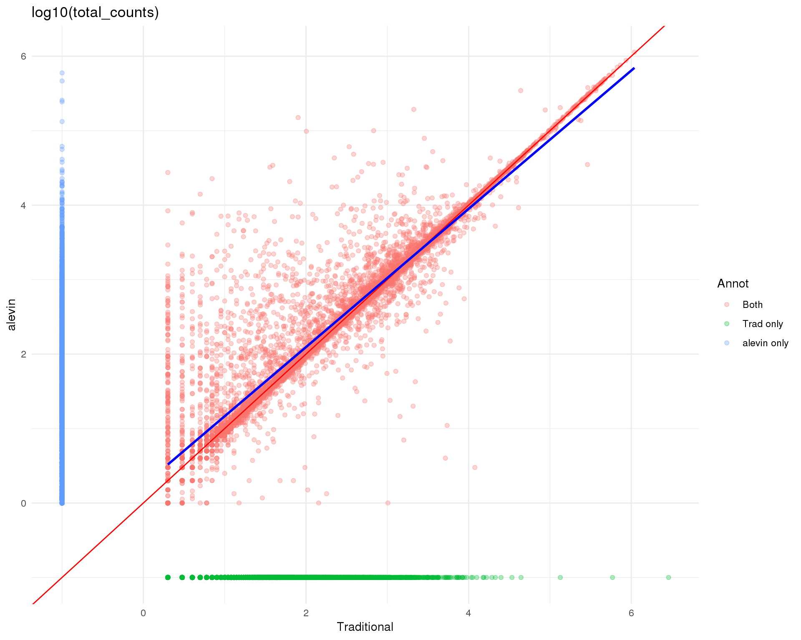
Expand here to see past versions of gene-counts-log-1.png:
| Version | Author | Date |
|---|---|---|
| 8f826ef | Luke Zappia | 2019-02-08 |
Gene cells
plot_data <- feat_data %>%
mutate(Traditional = n_cells_by_counts.Trad,
Alevin = n_cells_by_counts.Alevin) %>%
mutate(Traditional = replace_na(Traditional, -500),
Alevin = replace_na(Alevin, -500))
ggplot(plot_data, aes(x = Traditional, y = Alevin, colour = Annot)) +
geom_point(alpha = 0.3) +
geom_abline(intercept = 0, slope = 1, colour = "red") +
geom_smooth(data = filter(plot_data, Annot == "Both"),
method = "lm", colour = "blue") +
ggtitle("n_cells_by_counts") +
theme_minimal()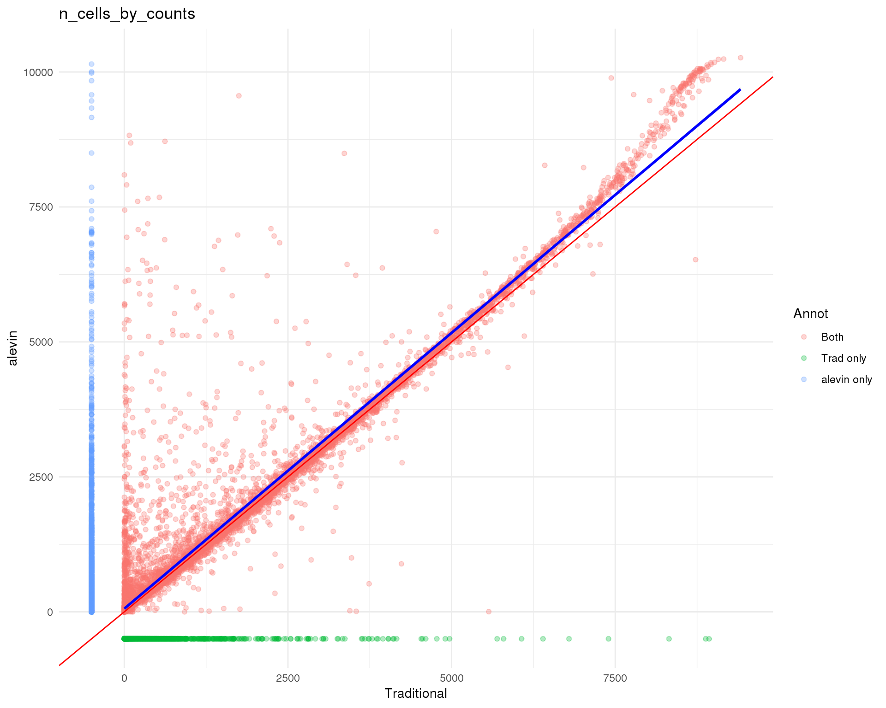
Expand here to see past versions of gene-cells-1.png:
| Version | Author | Date |
|---|---|---|
| 8f826ef | Luke Zappia | 2019-02-08 |
Gene means
Standard
plot_data <- feat_data %>%
mutate(Traditional = mean_counts.Trad,
Alevin = mean_counts.Alevin) %>%
mutate(Traditional = replace_na(Traditional, -5),
Alevin = replace_na(Alevin, -5))
ggplot(plot_data, aes(x = Traditional, y = Alevin, colour = Annot)) +
geom_point(alpha = 0.3) +
geom_abline(intercept = 0, slope = 1, colour = "red") +
geom_smooth(data = filter(plot_data, Annot == "Both"),
method = "lm", colour = "blue") +
ggtitle("mean_counts") +
theme_minimal()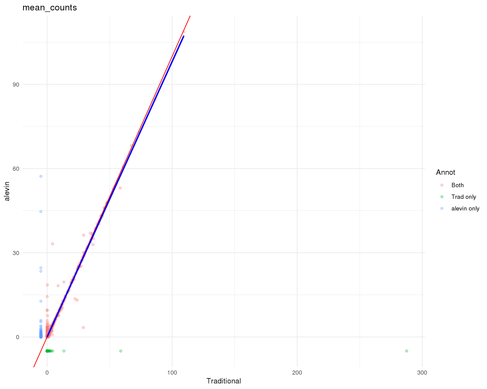
Expand here to see past versions of gene-means-1.png:
| Version | Author | Date |
|---|---|---|
| 8f826ef | Luke Zappia | 2019-02-08 |
Logged
plot_data <- feat_data %>%
mutate(Traditional = log10_mean_counts.Trad,
Alevin = log10_mean_counts.Alevin) %>%
mutate(Traditional = replace_na(Traditional, -0.1),
Alevin = replace_na(Alevin, -0.1))
ggplot(plot_data, aes(x = Traditional, y = Alevin, colour = Annot)) +
geom_point(alpha = 0.3) +
geom_abline(intercept = 0, slope = 1, colour = "red") +
geom_smooth(data = filter(plot_data, Annot == "Both"),
method = "lm", colour = "blue") +
ggtitle("log10(mean_counts)") +
theme_minimal()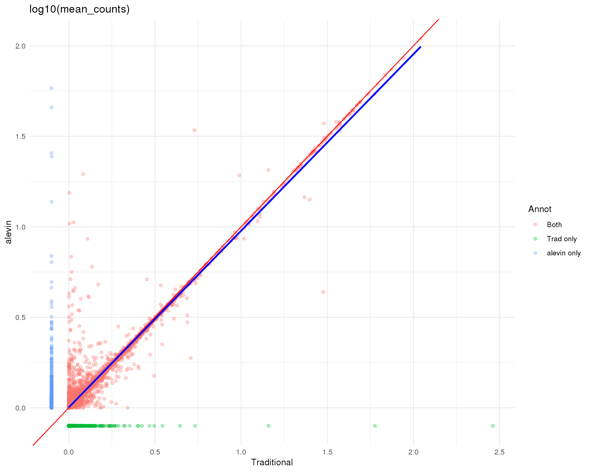
Expand here to see past versions of gene-means-log-1.png:
| Version | Author | Date |
|---|---|---|
| 8f826ef | Luke Zappia | 2019-02-08 |
Counts-cells
counts_data <- feat_data %>%
filter(Annot == "Both") %>%
select(ID, starts_with("log10_total_counts")) %>%
gather(key = "Method", value = "log10_total_counts", -ID) %>%
mutate(Method = str_split(Method, "\\.", simplify = TRUE)[, 2])
zeros_data <- feat_data %>%
filter(Annot == "Both") %>%
select(ID, starts_with("n_cells_by_counts")) %>%
gather(key = "Method", value = "n_cells_by_counts", -ID) %>%
mutate(Method = str_split(Method, "\\.", simplify = TRUE)[, 2])
plot_data <- left_join(counts_data, zeros_data, by = c("ID", "Method"))
ggplot(plot_data,
aes(x = log10_total_counts, y = n_cells_by_counts, colour = Method)) +
geom_point() +
geom_smooth(aes(group = Method), colour = "blue") +
facet_wrap(~ Method) +
theme_minimal()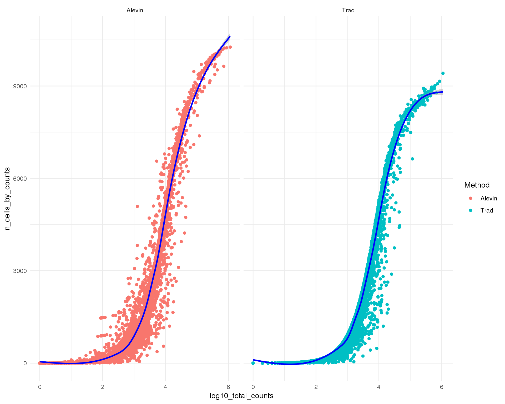
Expand here to see past versions of counts-zeros-1.png:
| Version | Author | Date |
|---|---|---|
| 8f826ef | Luke Zappia | 2019-02-08 |
Figures
plot_data <- cell_data %>%
select(BarcodeSample,
`Cell Ranger v3` = CellRangerFilt,
emptyDrops = EmpDropsFilt,
Alevin = AlevinFilt) %>%
mutate(`Cell Ranger v3` = if_else(`Cell Ranger v3`, 1L, 0L),
emptyDrops = if_else(emptyDrops, 1L, 0L),
Alevin = if_else(Alevin, 1L, 0L))
upset(plot_data, order.by = "freq",
sets.x.label = "Number of cells",
text.scale = c(2, 1.2, 2, 1.2, 2, 2),
matrix.color = "#7A52C7",
main.bar.color = "#7A52C7",
sets.bar.color = "#7A52C7")
grid.edit("arrange", name = "arrange2")
comp_plot <- grid.grab()
plot_data <- cell_data %>%
mutate(Traditional = total_counts.Trad,
Alevin = total_counts.Alevin) %>%
mutate(Traditional = replace_na(Traditional,
0.9 * min(Traditional, na.rm = TRUE)),
Alevin = replace_na(Alevin, 0.9 * min(Alevin, na.rm = TRUE)))
counts_plot <- ggplot(plot_data,
aes(x = Traditional, y = Alevin, colour = SelBy)) +
geom_point(alpha = 0.3) +
geom_abline(intercept = 0, slope = 1, colour = "#7A52C7") +
geom_smooth(data = filter(plot_data, SelBy == "Both"),
method = "lm", colour = "#00B7C6") +
scale_x_log10(labels = scales::number) +
scale_y_log10(labels = scales::number) +
scale_colour_manual(values = c("#EC008C", "#00ADEF", "#8DC63F"),
labels = c("Both", "Alignment based only",
"Alevin only")) +
ggtitle("Total counts per cell") +
xlab("Alignment based") +
theme_minimal() +
theme(legend.position = "bottom",
legend.title = element_blank())
plot_data <- feat_data %>%
mutate(Traditional = log10_mean_counts.Trad,
Alevin = log10_mean_counts.Alevin) %>%
mutate(Traditional = replace_na(Traditional, -0.1),
Alevin = replace_na(Alevin, -0.1))
mean_plot <- ggplot(plot_data,
aes(x = Traditional, y = Alevin, colour = Annot)) +
geom_point(alpha = 0.3) +
geom_abline(intercept = 0, slope = 1, colour = "#7A52C7") +
geom_smooth(data = filter(plot_data, Annot == "Both"),
method = "lm", colour = "#00B7C6") +
scale_colour_manual(values = c("#EC008C", "#00ADEF", "#8DC63F"),
labels = c("Both", "Alignment based only",
"Alevin only")) +
ggtitle("Mean counts per gene (log10)") +
xlab("Alignment based") +
theme_minimal() +
theme(legend.position = "bottom",
legend.title = element_blank())
counts_data <- feat_data %>%
filter(Annot == "Both") %>%
select(ID, starts_with("log10_total_counts")) %>%
gather(key = "Method", value = "log10_total_counts", -ID) %>%
mutate(Method = str_split(Method, "\\.", simplify = TRUE)[, 2])
zeros_data <- feat_data %>%
filter(Annot == "Both") %>%
select(ID, starts_with("n_cells_by_counts")) %>%
gather(key = "Method", value = "n_cells_by_counts", -ID) %>%
mutate(Method = str_split(Method, "\\.", simplify = TRUE)[, 2]) %>%
mutate(PropZero = if_else(Method == "Trad",
1 - n_cells_by_counts / ncol(selected),
1 - n_cells_by_counts / ncol(alevin)))
plot_data <- left_join(counts_data, zeros_data, by = c("ID", "Method")) %>%
mutate(Method = factor(Method, levels = c("Trad", "Alevin"),
labels = c("Alignment based", "Alevin")))
zeros_plot <- ggplot(plot_data,
aes(x = log10_total_counts, y = PropZero, colour = Method)) +
geom_point(alpha = 0.3) +
geom_smooth(aes(group = Method), colour = "#EC008C") +
scale_y_continuous(labels = scales::percent) +
scale_colour_manual(values = c("#00ADEF", "#8DC63F")) +
facet_wrap(~ Method) +
ggtitle("Zeros relationship") +
xlab("Total counts per gene (log10)") +
ylab("Percentage zeros") +
theme_minimal() +
theme(legend.position = "none")fig <- plot_grid(comp_plot, counts_plot, mean_plot, zeros_plot,
nrow = 2, labels = "AUTO")
ggsave(here::here("output", DOCNAME, "alevin-comparison.pdf"), fig,
width = 7, height = 6, scale = 2)
ggsave(here::here("output", DOCNAME, "alevin-comparison.png"), fig,
width = 7, height = 6, scale = 2)
fig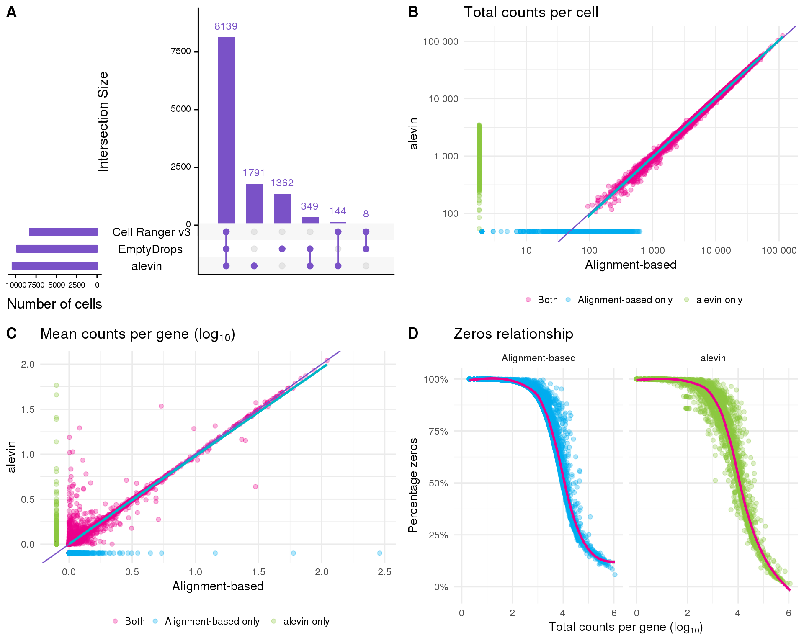
Summary
Overall the two approaches seem to produce similar results. There are differences between them but it is difficult to tell if one approach is inaccurate. For the rest of this analysis we will stick with the traditional approach as it is more familiar.
Parameters
This table describes parameters used and set in this document.
params <- list(
)
params <- jsonlite::toJSON(params, pretty = TRUE)
knitr::kable(jsonlite::fromJSON(params))Output files
This table describes the output files produced by this document. Right click and Save Link As… to download the results.
write_rds(alevin, here::here("data/processed/01B-alevin.Rds"))dir.create(here::here("output", DOCNAME), showWarnings = FALSE)
readr::write_lines(params, here::here("output", DOCNAME, "parameters.json"))
knitr::kable(data.frame(
File = c(
getDownloadLink("parameters.json", DOCNAME)
),
Description = c(
"Parameters set and used in this analysis"
)
))| File | Description |
|---|---|
| parameters.json | Parameters set and used in this analysis |
Session information
devtools::session_info()─ Session info ──────────────────────────────────────────────────────────
setting value
version R version 3.5.0 (2018-04-23)
os CentOS release 6.7 (Final)
system x86_64, linux-gnu
ui X11
language (EN)
collate en_US.UTF-8
ctype en_US.UTF-8
tz Australia/Melbourne
date 2019-02-22
─ Packages ──────────────────────────────────────────────────────────────
! package * version date lib source
assertthat 0.2.0 2017-04-11 [1] CRAN (R 3.5.0)
backports 1.1.3 2018-12-14 [1] CRAN (R 3.5.0)
bindr 0.1.1 2018-03-13 [1] CRAN (R 3.5.0)
bindrcpp 0.2.2 2018-03-29 [1] CRAN (R 3.5.0)
Biobase * 2.42.0 2018-10-30 [1] Bioconductor
BiocGenerics * 0.28.0 2018-10-30 [1] Bioconductor
BiocParallel * 1.16.5 2019-01-04 [1] Bioconductor
bitops 1.0-6 2013-08-17 [1] CRAN (R 3.5.0)
broom 0.5.1 2018-12-05 [1] CRAN (R 3.5.0)
callr 3.1.1 2018-12-21 [1] CRAN (R 3.5.0)
cellranger 1.1.0 2016-07-27 [1] CRAN (R 3.5.0)
cli 1.0.1 2018-09-25 [1] CRAN (R 3.5.0)
colorspace 1.4-0 2019-01-13 [1] CRAN (R 3.5.0)
cowplot * 0.9.4 2019-01-08 [1] CRAN (R 3.5.0)
crayon 1.3.4 2017-09-16 [1] CRAN (R 3.5.0)
DelayedArray * 0.8.0 2018-10-30 [1] Bioconductor
desc 1.2.0 2018-05-01 [1] CRAN (R 3.5.0)
devtools 2.0.1 2018-10-26 [1] CRAN (R 3.5.0)
digest 0.6.18 2018-10-10 [1] CRAN (R 3.5.0)
dplyr * 0.7.8 2018-11-10 [1] CRAN (R 3.5.0)
evaluate 0.12 2018-10-09 [1] CRAN (R 3.5.0)
forcats * 0.3.0 2018-02-19 [1] CRAN (R 3.5.0)
fs 1.2.6 2018-08-23 [1] CRAN (R 3.5.0)
generics 0.0.2 2018-11-29 [1] CRAN (R 3.5.0)
GenomeInfoDb * 1.18.1 2018-11-12 [1] Bioconductor
GenomeInfoDbData 1.2.0 2019-01-15 [1] Bioconductor
GenomicRanges * 1.34.0 2018-10-30 [1] Bioconductor
ggplot2 * 3.1.0 2018-10-25 [1] CRAN (R 3.5.0)
git2r 0.24.0 2019-01-07 [1] CRAN (R 3.5.0)
glue 1.3.0 2018-07-17 [1] CRAN (R 3.5.0)
gridExtra 2.3 2017-09-09 [1] CRAN (R 3.5.0)
gtable 0.2.0 2016-02-26 [1] CRAN (R 3.5.0)
haven 2.0.0 2018-11-22 [1] CRAN (R 3.5.0)
here 0.1 2017-05-28 [1] CRAN (R 3.5.0)
hms 0.4.2 2018-03-10 [1] CRAN (R 3.5.0)
htmltools 0.3.6 2017-04-28 [1] CRAN (R 3.5.0)
httr 1.4.0 2018-12-11 [1] CRAN (R 3.5.0)
IRanges * 2.16.0 2018-10-30 [1] Bioconductor
jsonlite 1.6 2018-12-07 [1] CRAN (R 3.5.0)
knitr 1.21 2018-12-10 [1] CRAN (R 3.5.0)
P lattice 0.20-35 2017-03-25 [5] CRAN (R 3.5.0)
lazyeval 0.2.1 2017-10-29 [1] CRAN (R 3.5.0)
lubridate 1.7.4 2018-04-11 [1] CRAN (R 3.5.0)
magrittr 1.5 2014-11-22 [1] CRAN (R 3.5.0)
P Matrix 1.2-14 2018-04-09 [5] CRAN (R 3.5.0)
matrixStats * 0.54.0 2018-07-23 [1] CRAN (R 3.5.0)
memoise 1.1.0 2017-04-21 [1] CRAN (R 3.5.0)
modelr 0.1.3 2019-02-05 [1] CRAN (R 3.5.0)
munsell 0.5.0 2018-06-12 [1] CRAN (R 3.5.0)
P nlme 3.1-137 2018-04-07 [5] CRAN (R 3.5.0)
pillar 1.3.1 2018-12-15 [1] CRAN (R 3.5.0)
pkgbuild 1.0.2 2018-10-16 [1] CRAN (R 3.5.0)
pkgconfig 2.0.2 2018-08-16 [1] CRAN (R 3.5.0)
pkgload 1.0.2 2018-10-29 [1] CRAN (R 3.5.0)
plyr 1.8.4 2016-06-08 [1] CRAN (R 3.5.0)
prettyunits 1.0.2 2015-07-13 [1] CRAN (R 3.5.0)
processx 3.2.1 2018-12-05 [1] CRAN (R 3.5.0)
ps 1.3.0 2018-12-21 [1] CRAN (R 3.5.0)
purrr * 0.3.0 2019-01-27 [1] CRAN (R 3.5.0)
R.methodsS3 1.7.1 2016-02-16 [1] CRAN (R 3.5.0)
R.oo 1.22.0 2018-04-22 [1] CRAN (R 3.5.0)
R.utils 2.7.0 2018-08-27 [1] CRAN (R 3.5.0)
R6 2.3.0 2018-10-04 [1] CRAN (R 3.5.0)
Rcpp 1.0.0 2018-11-07 [1] CRAN (R 3.5.0)
RCurl 1.95-4.11 2018-07-15 [1] CRAN (R 3.5.0)
readr * 1.3.1 2018-12-21 [1] CRAN (R 3.5.0)
readxl 1.2.0 2018-12-19 [1] CRAN (R 3.5.0)
remotes 2.0.2 2018-10-30 [1] CRAN (R 3.5.0)
rlang 0.3.1 2019-01-08 [1] CRAN (R 3.5.0)
rmarkdown 1.11 2018-12-08 [1] CRAN (R 3.5.0)
rprojroot 1.3-2 2018-01-03 [1] CRAN (R 3.5.0)
rstudioapi 0.9.0 2019-01-09 [1] CRAN (R 3.5.0)
rvest 0.3.2 2016-06-17 [1] CRAN (R 3.5.0)
S4Vectors * 0.20.1 2018-11-09 [1] Bioconductor
scales 1.0.0 2018-08-09 [1] CRAN (R 3.5.0)
sessioninfo 1.1.1 2018-11-05 [1] CRAN (R 3.5.0)
SingleCellExperiment * 1.4.1 2019-01-04 [1] Bioconductor
stringi 1.2.4 2018-07-20 [1] CRAN (R 3.5.0)
stringr * 1.3.1 2018-05-10 [1] CRAN (R 3.5.0)
SummarizedExperiment * 1.12.0 2018-10-30 [1] Bioconductor
testthat 2.0.0 2017-12-13 [5] CRAN (R 3.5.0)
tibble * 2.0.1 2019-01-12 [1] CRAN (R 3.5.0)
tidyr * 0.8.2 2018-10-28 [1] CRAN (R 3.5.0)
tidyselect 0.2.5 2018-10-11 [1] CRAN (R 3.5.0)
tidyverse * 1.2.1 2017-11-14 [1] CRAN (R 3.5.0)
UpSetR * 1.3.3 2017-03-21 [1] CRAN (R 3.5.0)
usethis 1.4.0 2018-08-14 [1] CRAN (R 3.5.0)
whisker 0.3-2 2013-04-28 [1] CRAN (R 3.5.0)
withr 2.1.2 2018-03-15 [1] CRAN (R 3.5.0)
workflowr 1.1.1 2018-07-06 [1] CRAN (R 3.5.0)
xfun 0.4 2018-10-23 [1] CRAN (R 3.5.0)
xml2 1.2.0 2018-01-24 [1] CRAN (R 3.5.0)
XVector 0.22.0 2018-10-30 [1] Bioconductor
yaml 2.2.0 2018-07-25 [1] CRAN (R 3.5.0)
zlibbioc 1.28.0 2018-10-30 [1] Bioconductor
[1] /group/bioi1/luke/analysis/phd-thesis-analysis/packrat/lib/x86_64-pc-linux-gnu/3.5.0
[2] /group/bioi1/luke/analysis/phd-thesis-analysis/packrat/lib-ext/x86_64-pc-linux-gnu/3.5.0
[3] /group/bioi1/luke/analysis/phd-thesis-analysis/packrat/lib-R/x86_64-pc-linux-gnu/3.5.0
[4] /home/luke.zappia/R/x86_64-pc-linux-gnu-library/3.5
[5] /usr/local/installed/R/3.5.0/lib64/R/library
P ── Loaded and on-disk path mismatch.This reproducible R Markdown analysis was created with workflowr 1.1.1